Good phase noise performance is reached with high to very high \(Q\) in the resonator (see Equation 56).
Oscillator tunability requires a tunable resonator, which usually results in a low-to-moderate \(Q\), unfortunately.
Oscillators have inherent frequency stability issues due to temperature variations, device aging, and supply voltage fluctuations. However, for wireless communication systems, precise frequency control and a very stable LO (down to a few ppm of accuracy) are required.
Figure 75: Input and output waveforms of an XOR-based phase detector.
Basic PLL Architecture
JK Flip-Flop Phase Detector
Instead of an XOR gate, which requires 50% duty cycle input signals, an edge-triggered JK flip-flop can be used. While the overall behavior is similar, the JK flip-flop-based PD is insensitive to duty cycle variations of the input signals, as it only evaluates the rising edges of the reference and feedback signals (Best 1999).
Basic PLL Architecture
Figure 76: Laplace domain model of a PLL.
Basic PLL Architecture
\[
H_\mathrm{LP}(s) = \frac{1}{1 + s T_\mathrm{LP}}.
\]
Basic PLL Architecture
Why Regulate Phase Instead of Frequency (PLL vs. FLL)?
Before we proceed, it is worth discussing why PLLs regulate the phase of the VCO output rather than its frequency directly. The reason lies in the relationship between phase and frequency: Frequency is the time derivative of phase. By controlling the phase, the PLL inherently controls the frequency as well. Additionally, even if the phase regulation has a steady-state phase error \(\varphi_\mathrm{err}\), the frequency error in steady state is zero, as can be appreciated when inspecting
\[
\omega_\mathrm{out}(t) = \frac{d \varphi_\mathrm{out}(t)}{dt} = \frac{d}{dt} \left[ N \cdot \varphi_\mathrm{ref}(t) + \varphi_\mathrm{err} \right] = N \cdot \frac{d \varphi_\mathrm{ref}(t)}{dt} = N \cdot \omega_\mathrm{ref}(t).
\]
In principle, one could also design a frequency-locked loop (FLL) that compares the frequencies of the reference and VCO output signals directly (by, e.g., using counters); however, this usually results in non-zero frequency error in steady state. Nevertheless, FLLs are often used in combination with PLLs to improve acquisition time and robustness, especially in scenarios with large initial frequency offsets.
\(H(s)\) is a small-signal model of the PLL around its locked operating point, only valid for small perturbations. Large-signal behavior, such as acquisition and lock range, is not captured by this model.
A PLL is a sampled system, working at instants of \(T_\mathrm{ref}\). \(H(s)\) is a continuous-time approximation, which is valid only if the loop bandwidth is much smaller (typically \(1/10\)) than the reference frequency \(f_\mathrm{ref}\). If this approximation is not valid, a discrete-time model of the PLL must be used, deriving the \(z\)-domain transfer function \(H(z)\).
Basic PLL Architecture
\[
H(s) = N \cdot \frac{\omega_\mathrm{n}^2}{s^2 + s \cdot 2 \zeta \omega_\mathrm{n} + \omega_\mathrm{n}^2},
\]
Figure 77: Implementation of a phase-frequency detector.
Charge-Pump PLL
If the reference signal leads the feedback signal (its rising edge arrives first), the “UP” output is activated, causing the CP to source current into the integration capacitor, increasing the VCO tuning voltage and thus the VCO frequency.
If the feedback signal leads the reference signal (its rising edge arrives first), the “DOWN” output is activated, causing the CP to sink current from the integration capacitor, decreasing the VCO tuning voltage and thus the VCO frequency.
If both signals are aligned in phase and frequency, both outputs are only activated for a short time (the gate delays of the DFF and the AND), and the CP does not source or sink current; the integration capacitor in the loop filter holds its voltage, maintaining the VCO frequency.
The rising edge that arrives last resets both outputs, ensuring that the CP only sources or sinks current for a duration proportional to the phase difference between the two signals.
Charge-Pump PLL
Reference leads feedback: The “UP” output is activated, and the CP sources current to the loop filter, increasing the VCO frequency.
Charge-Pump PLL
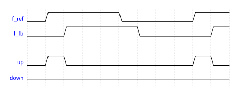
Figure 78: Reference leading the VCO feedback signal, frequencies are already aligned.
Charge-Pump PLL
Feedback leads reference: The “DOWN” output is activated, and the CP sinks current from the loop filter, decreasing the VCO frequency.
Charge-Pump PLL
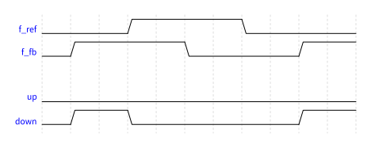
Figure 79: VCO feedback signal leading the reference, frequencies are already aligned.
Charge-Pump PLL
Both signals aligned: Both outputs are briefly activated, but the CP does not source or sink current, maintaining the VCO frequency.
Charge-Pump PLL
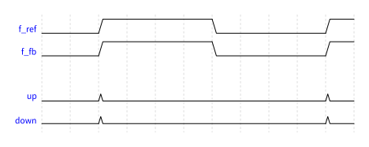
Figure 80: VCO feedback and reference signal are aligned in phase and frequency.
Charge-Pump PLL
Large frequency difference: The PFD continues to source or sink current until the phases align, allowing the PLL to acquire lock even with large initial frequency offsets.
Charge-Pump PLL
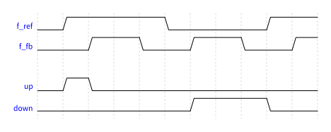
Figure 81: VCO feedback and reference signal have different frequencies (the VCO frequency is too high).
Charge-Pump PLL
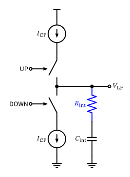
Figure 82: Charge pump consisting of two matched current sources and switches.
The PLL regulates the phase of a VCO to match the phase of a reference signal, using feedback control. Even with a steady-state phase error, the frequency error is zero (Type-I PLL). In a Type-II PLL, both phase and frequency errors are zero in steady state.
The lowpass behavior of the loop filter determines the dynamic response and stability of the PLL.
Further, the PLL transfer function from reference phase to output phase has the form of a lowpass, which passes the reference oscillator phase noise to the output inside the passband. The phase noise of the VCO is suppressed inside the loop bandwidth, as the PLL corrects for phase deviations.
Outside the PLL loop bandwidth, the VCO phase noise dominates, as the PLL cannot correct for phase deviations fast enough.
Charge-Pump PLL
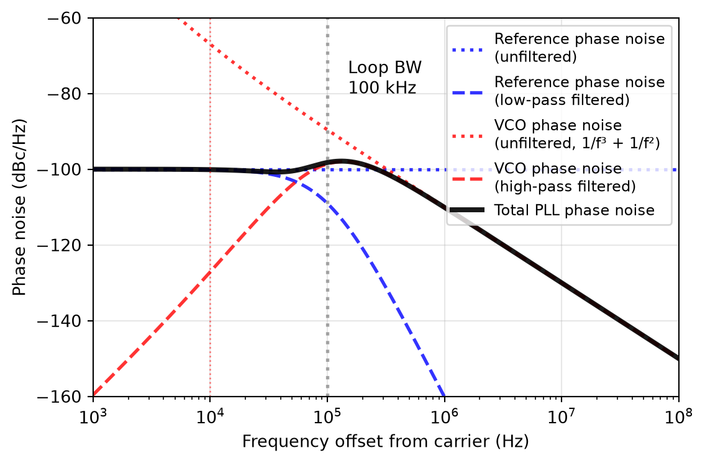
Figure 84: PLL phase noise contributions at the PLL output showing reference phase noise (increased by 20*log(N) and low-pass shaped), VCO phase noise (high-pass shaped), and total phase noise.
7.3 All-Digital PLL
All-Digital PLL
Figure 85: Block diagram of an all-digital PLL.
7.3.1 Time-to-Digital Converter
Time-to-Digital Converter
Figure 86: Basic TDC implementation as a delay line with parallel capture flip-flops.
To get an idea of the performance requirements for the TDC, we assume a DCO output frequency of 2.4 GHz (e.g., for a Bluetooth application) and a reference frequency of 40 MHz. If we aim for a TDC phase noise contribution of -100 dBc/Hz at the DCO output, we can rearrange the above equation to find the required TDC time resolution:
This number is challenging but achievable with modern TDC designs in nm CMOS.
7.3.2 Digitally Controlled Oscillator
An analog-controlled oscillator (e.g., a VCO) is combined with a digital-to-analog converter (DAC) to convert the digital tuning word into an analog control voltage. This approach is shown in Figure 87.
Digitally Controlled Oscillator
Figure 87: Digitally controlled oscillator using a DAC.
Digitally Controlled Oscillator
A digitally-controlled oscillator uses a large number of small varactors or switched capacitor banks to adjust the oscillation frequency directly based on the digital tuning word. An example implementation of a switched varactor is shown in Figure 88, or a switched capacitor like shown in Figure 72 is used.
Digitally Controlled Oscillator
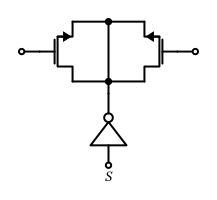
Figure 88: A switched differential varactor used for fine frequency control in a DCO.
Figure 91: NTF H(f) of a first-order delta-sigma modulator showing the high-pass noise shaping characteristic.
Delta-Sigma Modulator
Table 6: DSM output ranges and characteristics for different orders
DSM Order
Output Range
Noise Shaping
1
\(N, N+1\)
20 dB/decade
2
\(N-1 \ldots N+2\)
40 dB/decade
3
\(N-3 \ldots N+4\)
60 dB/decade
Delta-Sigma Modulator
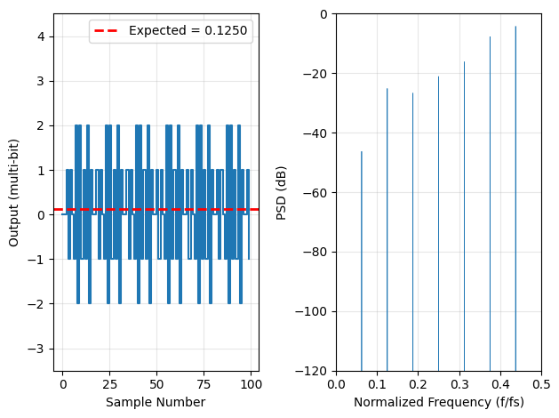
Figure 92: Time series and the spectrum of a MASH 3rd-order modulator.
Delta-Sigma Modulator
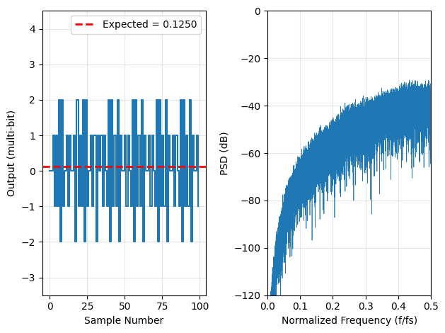
Figure 93: Time series and the spectrum of a MASH 3rd-order modulator with added dither.
Delta-Sigma Modulator
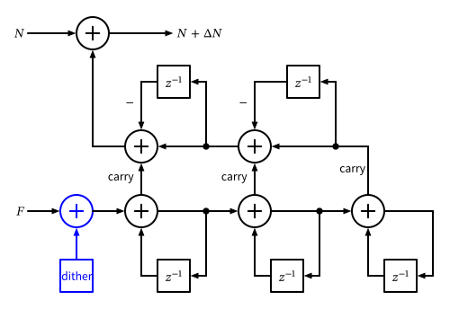
Figure 94: Block diagram of a 3rd-order MASH 1-1-1 delta-sigma modulator with three cascaded first-order stages and digital noise cancellation logic including dither injection.
7.4.2 Fractional-N PLL Implementation
Fractional-N PLL Implementation
Figure 95: Block diagram of a fractional-N PLL.
Fractional-N PLL Implementation
Use a Type-I PLL architecture with \(\Delta \varphi \neq 0\).
Introduce a phase offset in a Type-II PLL to operate away from \(\Delta \varphi = 0\).
Fractional-N PLL Implementation
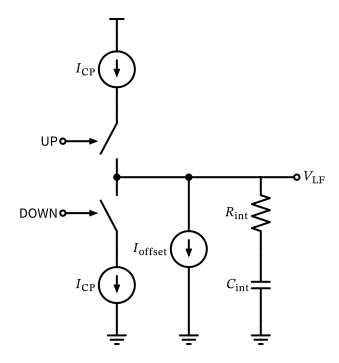
Figure 96: Charge pump with offset current for use in a fractional-N Type-II PLL.
Fractional-N PLL Implementation
Figure 97: Implementation of reference frequency doubler.
Fractional-N PLL Implementation
Figure 98: Block diagram of a fractional-N PLL including a retiming flip-flop to reduce the MMD-related jitter.
References
Best, Roland E. 1999. Phase-Locked Loops: Design, Simulation, and Applications. McGraw-Hill Education.
Matsuya, Y., K. Uchimura, A. Iwata, and T. Kaneko. 1989. “A 17 bit oversampling D-A conversion technology using multistage noise shaping.”IEEE Journal of Solid-State Circuits 24 (4): 969–75. https://doi.org/10.1109/4.34079.
Schreier, Richard, Shanthi Pavan, and Gabor C. Temes. 2017. Understanding Delta-Sigma Data Converters. John Wiley & Sons, Ltd.
Staszewski, R. B., D. Leipold, K. Muhammad, and P. T. Balsara. 2003. “Digitally controlled oscillator (DCO)-based architecture for RF frequency synthesis in a deep-submicrometer CMOS Process.”IEEE Transactions on Circuits and Systems II: Analog and Digital Signal Processing 50 (11): 815–28. https://doi.org/10.1109/tcsii.2003.819128.